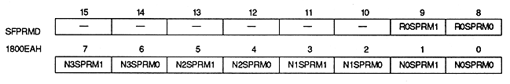

Special priority mode bit : Special priority mode bit
| N0SPRM1, N0SPRM0 | 1800EAH | bit 1,0 | For NBG0 (or RBG1) |
| N1SPRM1, N1SPRM0 | 1800EAH | bits 3,2 | For NBG1 ( Or for EXBG) |
| N2SPRM1, N2SPRM0 | 1800EAH | bits 5,4 | For NBG2 |
| N3SPRM1, N3SPRM0 | 1800EAH | bits 7,6 | For NBG3 |
| R0SPRM1, R0SPRM0 | 1800EAH | bits 9,8 | For RBG0 |
| xxSPRM1 | xxSPRM0 | Mode | Process |
| 0 | 0 | Mode 0 | The least significant bit of the priority number is Specify for each screen |
| 0 | 1 | Mode 1 | The least significant bit of the priority number is Specify for each character |
| 1 | 0 | Mode 2 | The least significant bit of the priority number is Specify for each dot |
| 1 | 1 | - | Setting prohibited |
Do not set mode 2 when the color format of the scroll screen is RGB mode.
* Do not set any mode other than mode 0 in EXBG.
• Characters or dots with a priority number of 0 are considered transparent.